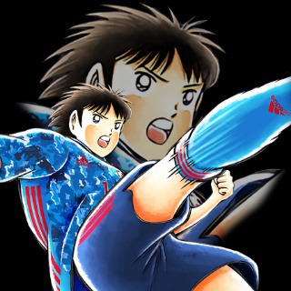
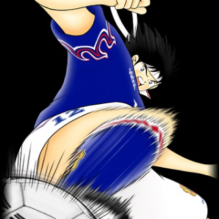
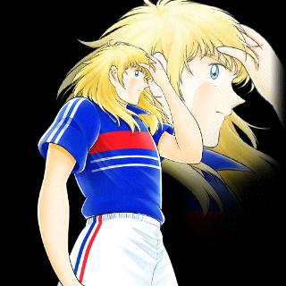
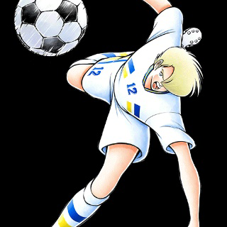
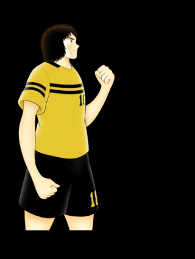

Melhores personagens de Captain Tsubasa (Minha opinião).
Clique nas imagens para conhecer melhor esses personagens:
- Taro Misaki

Apresentação:
-
Taro Misaki, o "Artista do Campo" em Captain Tsubasa, é um meio-campista talentoso e parceiro de Tsubasa Ozora, formando a dupla "Golden Duo". Seu jogo destaca-se pela técnica apurada, visão tática e trabalho em equipe, mantendo a paixão pelo futebol apesar de constantes mudanças com seu pai.
- Hikaru Matsuyama

Apresentação
- Hikaru Matsuyama é um jogador determinado e líder nato em Captain Tsubasa, conhecido por sua força, espírito de equipe e lealdade. Capitão do Furano FC, representa o estilo de jogo robusto do norte do Japão.
- Elle Sid Pierre

Apresentação
- Pierre é um jogador habilidoso e talentoso em Captain Tsubasa, conhecido por sua técnica refinada e habilidades no campo. Ele joga como atacante no time francês e é um dos principais jogadores da seleção, destacando-se por sua visão de jogo e precisão.
- Stefan Levin

Apresentação
- Stefan Levin é um atacante da seleção da Suécia em Captain Tsubasa, conhecido por sua velocidade, habilidade de drible e sua capacidade de fazer gols. Ele é um jogador talentoso e um dos principais adversários da seleção japonesa durante a competição internacional.
- Shun Nitta

Apresentação
- Shun Nitta é um talentoso atacante da seleção japonesa em Captain Tsubasa, conhecido por sua velocidade impressionante e habilidades técnicas refinadas. Sua capacidade de driblar com precisão, aliada a um excelente chute, o torna uma ameaça constante no ataque. Nitta é versátil, capaz de criar jogadas e finalizar com eficácia, sendo uma peça chave no esquema ofensivo da seleção japonesa.